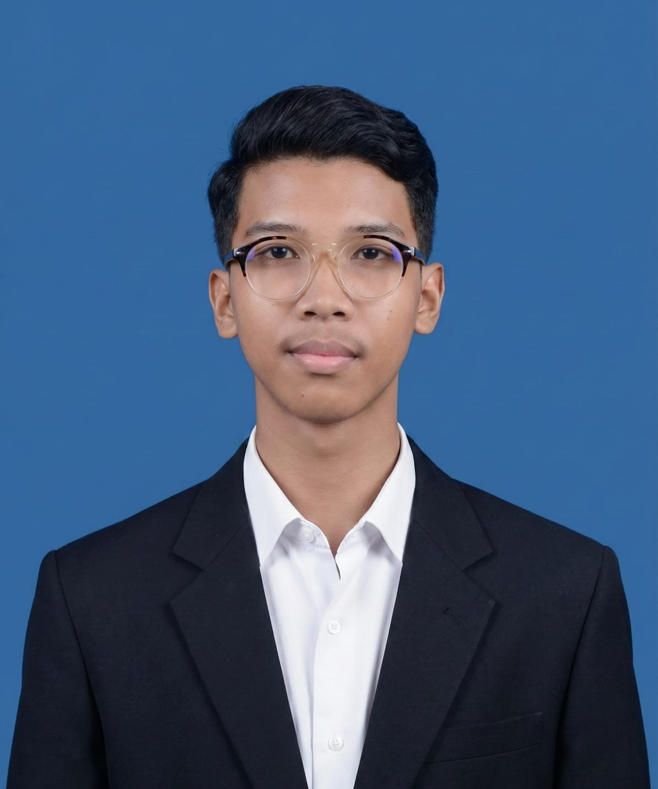
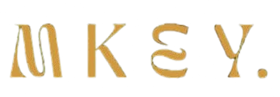
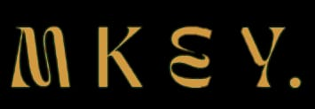

Selected Works
A few projects that reflect how I think and Build
Clash of Clans
Strategy & Management


Mengelola strategi pertahanan base (Town Hall 12) dan manajemen sumber daya clan.
Tanggung jawab meliputi koordinasi Clan War Leagues dan optimasi farming resources.
Hay Day Farming
Economy Optimization
Membangun sistem pertanian digital yang efisien. Fokus pada rantai produksi (Production Chain)
untuk memaksimalkan profit koin dan XP dalam waktu singkat.
Bus Simulator ID
Simulation & Traffic Logic
Simulasi navigasi kendaraan berat dengan fokus pada kepatuhan rambu lalu lintas
dan kustomisasi livery kendaraan (Modding).